Human Rights Information
Management System
Comprehensive User Manual for the Federal Admin Workspace
1. Introduction
The Human Rights Information Management System (HRIMS) is a national-level platform designed to manage, track, compile, and report on human rights treaty body obligations, concluding observations, list of issues, and related indicators for Pakistan. It supports the full workflow from creation of federal information requests, regional and departmental responses, federal review and acceptance, national compilation, through to analytical dashboards and a knowledge hub of core conventions.
This manual describes every major screen and feature available in the Federal Admin workspace, based on the system interface as of September 2026.
1.1 Purpose of HRIMS
- Centralize collection of quantitative and qualitative human rights data from provinces and federal departments.
- Map requests to treaty articles, List of Issues (LOI), and Concluding Observations.
- Support review, revision, and acceptance workflows between federal and regional/departmental actors.
- Produce compiled national records and exportable reports (PDF, Word, Excel).
- Provide dashboards for performance monitoring and indicator trends.
- Offer a Knowledge Hub with convention texts, LOIs, concluding observations, repositories, and trackers.
1.2 User Roles (Overview)
Federal Admin
Full control over request creation, regional response review, compilation, user & department management, and all dashboards.
Departmental data entry operator
ICT / Federal line ministries. Respond to departmental tasks linked to requests.
Regional Users
Submit consolidated provincial responses (visible to Federal Admin for review).
2. Login Screen
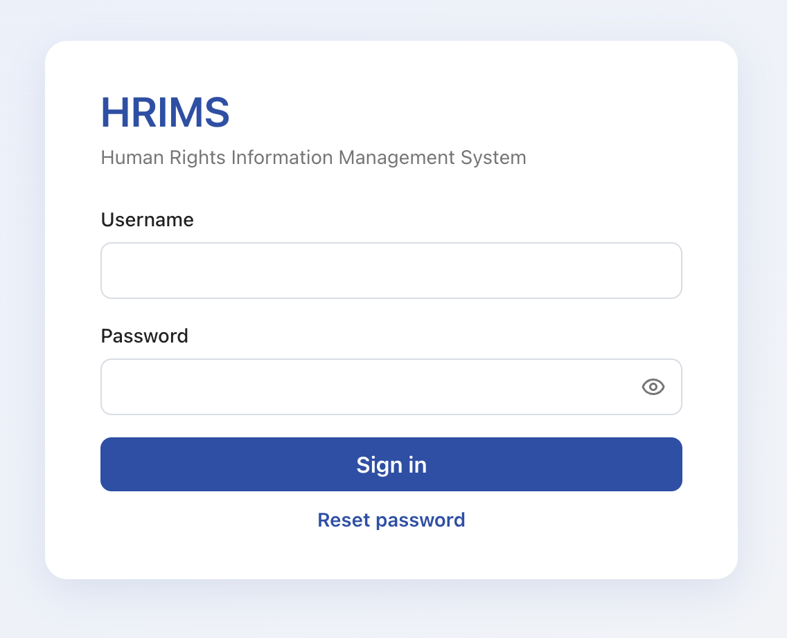
The login page is the entry point to HRIMS. It displays the system name “HRIMS” and the full title “Human Rights Information Management System”.
Features
- Username – Enter the assigned username.
- Password – Enter the password. An eye icon allows showing/hiding the password.
- Sign in – Authenticates the user and opens the appropriate workspace (Federal Admin, Department, or Regional).
- Reset password – Allows a user to initiate a password reset process.
After successful authentication, Federal Admin users are taken to the Home Dashboard.
3. Federal Dashboard (Home)

The Home screen is the central control center for national requests, reviews, and reporting. It greets the logged-in user (“Welcome, Federal Admin”) and shows the current date.
3.1 Summary Cards
- Total Requests – Overall count of requests in scope (e.g., 58), with a breakdown of draft vs active.
- Pending Requests – Number of requests still awaiting completion or review (e.g., 18 pending).
- Compiled Records / Completed Requests – National records already saved from federal compilation (e.g., 39).
3.2 Recent Responses Received
A list of the most recent consolidated responses from regions, showing title, region, date, and status badges such as Under Review, Revision, or Accepted. A “View All” button opens the full Regional Responses list.
3.3 Performance Overview
- Request Status Distribution – Donut chart summarizing overall request statuses.
- New Requests in Scope (6 Months) – Line chart showing request volume trend over recent months.
- Quick status counters: Pending Responses, Under Review, Accepted, Needs Modification.
3.4 Knowledge & Frameworks Shortcuts
Core Conventions
Human rights treaties ratified by Pakistan and how they map into HRIMS.
Human Rights Indicators
Key performance indicators across sectors and monitoring themes.
Sustainable Development Goals
SDG links and progress framing for national reporting.
Universal Periodic Review
UPR cycle context and Concluding Observations tracking.
3.5 Left Navigation Sidebar
The persistent left menu is organized into:
- FEDERAL ACTIONS – Request Management, Regional Responses, Compilation Center, Compiled Records, User Management, Manage Departments.
- FEDERAL DEPARTMENT ACTIONS – Departmental Responses, Response Compilation, Compiled Record.
- DASHBOARDS – Reporting Dashboard, Governance Dashboard.
- KNOWLEDGE HUB – Convention Info, Human Rights Indicators, Sustainable Development Goals, Universal Periodic Review.
The top bar shows notification count, current user (Federal Admin – Federal workspace), Profile, and Logout.
4. Request Management
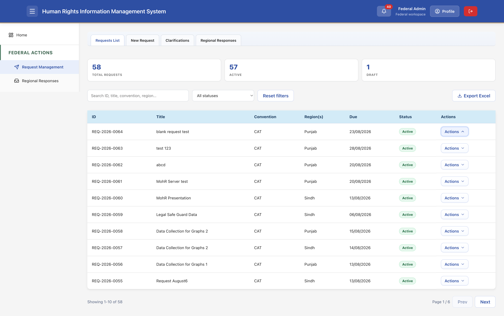
Request Management is the primary module for creating and tracking human rights information requests sent to regions and departments.
4.1 Tabs
- Requests List – Main table of all requests.
- New Request – Form to create a new request.
- Clarifications – Area for clarification exchanges.
- Regional Responses – Shortcut to the regional responses view.
4.2 Summary Metrics
Three cards show Total Requests, Active, and Draft counts.
4.3 Filters and Actions
- Search box – Search by ID, title, convention, region, etc.
- Status filter dropdown – Filter by All statuses or specific status.
- Reset filters button.
- Export Excel – Download the current list as an Excel file.
4.4 Requests Table Columns
- ID – Unique request identifier (e.g., REQ-2026-0064).
- Title – Short descriptive title of the request.
- Convention – Treaty abbreviation (e.g., CAT).
- Region(s) – Province(s) or ICT assigned.
- Due – Due date for responses.
- Status – Badge such as Active, Draft, etc.
- Actions – Dropdown for view, edit, or other operations on the request.
Pagination controls appear at the bottom (page size, Prev/Next).
5. Creating a New Request
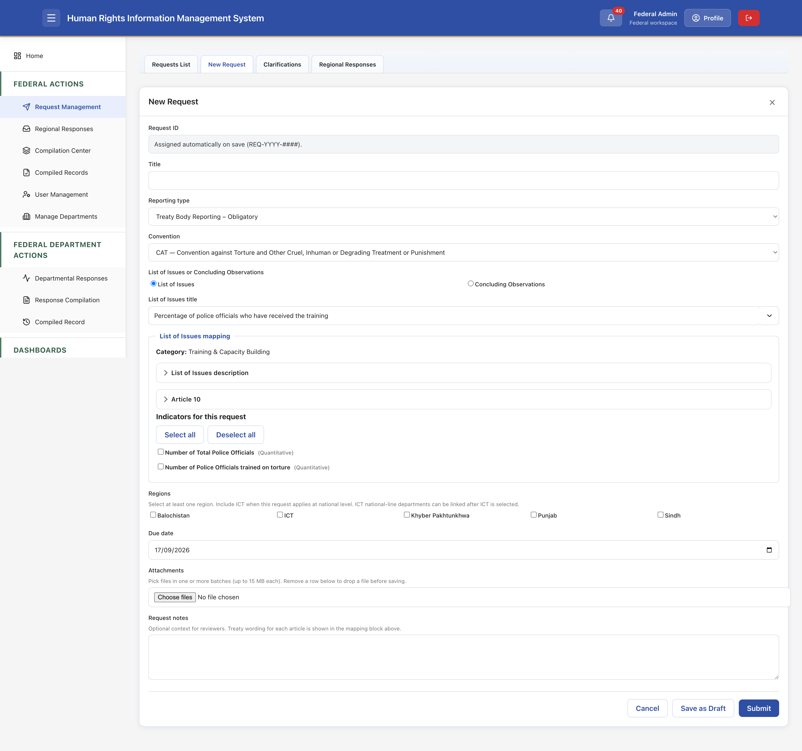
Clicking the “New Request” tab opens a comprehensive form used by Federal Admin to define a new information request.
Key Fields
- Request ID – Assigned automatically on save in the format REQ-YYYY-####.
- Title – Free-text title for the request.
- Reporting type – Dropdown (e.g., Treaty Body Reporting – Obligatory).
- Convention – Select the relevant convention (e.g., CAT – Convention against Torture…).
- List of Issues or Concluding Observations – Radio choice between “List of Issues” and “Concluding Observations”.
- List of Issues title – Dropdown of available LOI / observation titles.
List of Issues mapping
Shows the selected category (e.g., Training & Capacity Building) and expandable sections for description and relevant articles (e.g., Article 10).
Indicators for this request
Checkboxes for quantitative/qualitative indicators linked to the selected LOI/observation. Buttons allow Select all / Deselect all.
Regions
Multi-select checkboxes for Balochistan, ICT, Khyber Pakhtunkhwa, Punjab, Sindh. At least one region must be selected. ICT can be linked for national-level requests.
- Due date – Date picker for the response deadline.
- Attachments – File upload area (up to 15 MB per batch).
- Request notes – Optional free-text context for reviewers.
Actions
- Cancel – Discard and close the form.
- Save as Draft – Save without submitting to regions.
- Submit – Finalize and dispatch the request to selected regions/departments.
6. Regional Responses
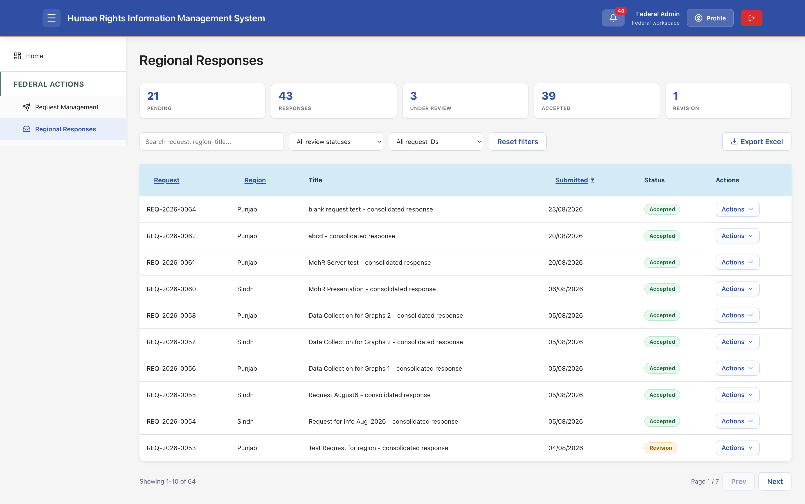
This screen lists all consolidated responses received from provinces. Federal Admin uses it to review, accept, or request revision.
6.1 Status Summary Cards
Cards show counts for: Pending, Responses (total), Under Review, Accepted, Revision.
6.2 Filters
- Search by request, region, title…
- Review status filter.
- Request ID filter.
- Reset filters and Export Excel.
6.3 Table Columns
- Request – Linked request ID.
- Region – Province that submitted.
- Title – Response title (often “– consolidated response”).
- Submitted – Date of submission.
- Status – Accepted / Under Review / Revision, etc.
- Actions – Open the detailed response view or perform review actions.
7. Viewing a Regional Response
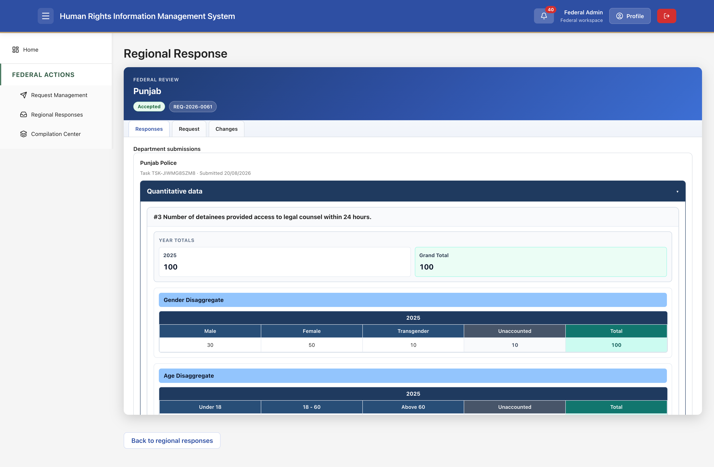
Opening a response shows a header with the region name (e.g., Punjab), status badge (Accepted), and request ID. Tabs typically include Responses, Request, and Changes.
7.1 Department submission
Displays the submitting department (e.g., Punjab Police), task ID, and submission date.
7.2 Quantitative data
For each indicator (e.g., “#3 Number of detainees provided access to legal counsel within 24 hours”):
- Year totals and Grand Total.
- Gender Disaggregate table (Male, Female, Transgender, Unaccounted, Total).
- Age Disaggregate table (Under 18, 18-60, Above 60, Unaccounted, Total).
Additional disaggregations (Religion, PWDs, etc.) may appear depending on the indicator design. A “Back to regional responses” button returns to the list.
8. Compilation Center
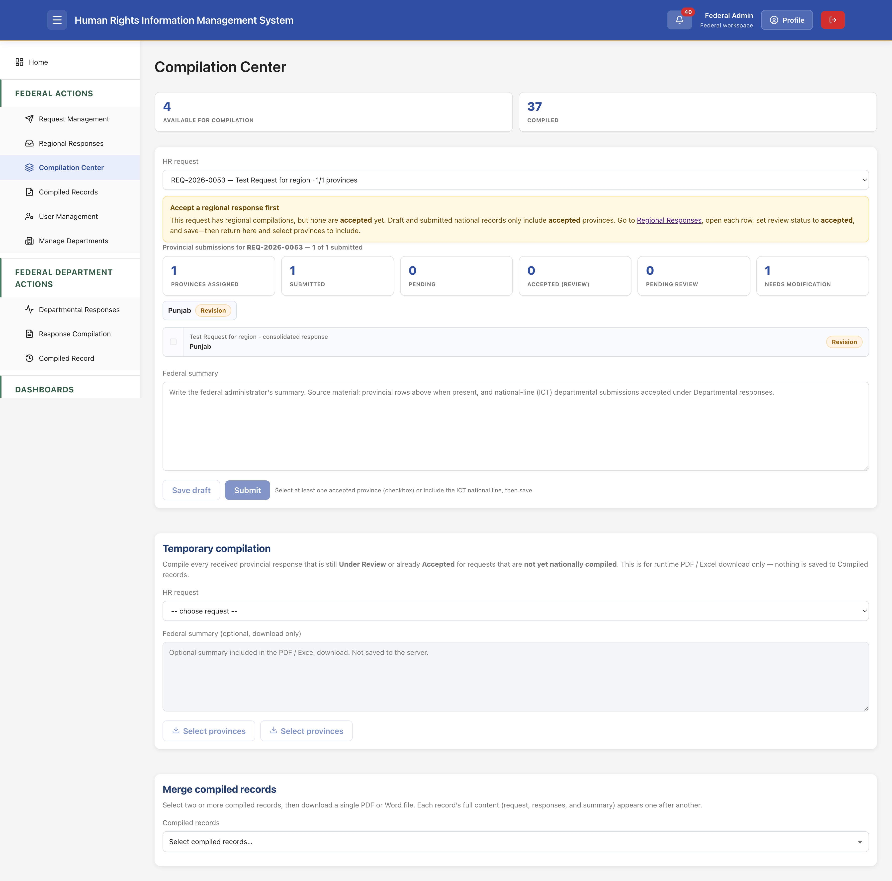
The Compilation Center is where Federal Admin creates national-level compiled records from accepted regional (and departmental) responses.
8.1 Main Compilation Area
- Select an HR request from the dropdown.
- Warning banner appears if no regional responses have been accepted yet – user is guided to accept them first.
- Provincial submissions summary cards: Provinces Assigned, Submitted, Pending, Accepted (Review), Pending Review, Needs Modification.
- List of provincial responses with checkboxes and status badges (only accepted provinces can be included).
- Federal summary text area – Write the national summary drawing on provincial data and any ICT departmental submissions.
- Save draft / Submit buttons. Submission requires at least one accepted province (or ICT national line) selected.
8.2 Temporary compilation
Allows on-the-fly compilation of any Under Review or Accepted provincial responses for requests not yet nationally compiled. Used for runtime PDF/Excel download only; nothing is saved to Compiled Records.
8.3 Merge compiled records
Select two or more already compiled records and download a single combined PDF or Word file containing each record’s full content.
9. Compiled Records List
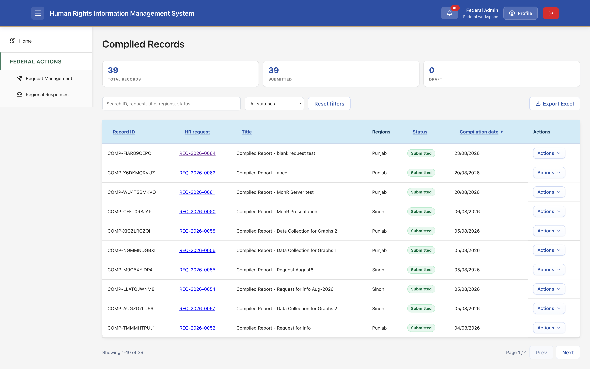
Lists all national compiled records that have been submitted or saved as draft.
9.1 Metrics
Cards for Total Records, Submitted, and Draft.
9.2 Filters & Export
- Search by ID, request, title, regions, status…
- Status filter, Reset filters, Export Excel.
9.3 Table Columns
- Record ID – Unique compiled record identifier (e.g., COMP-FIAR89OEPC).
- HR request – Linked original request ID (clickable).
- Title – “Compiled Report – …”.
- Regions – Provinces included.
- Status – Submitted / Draft.
- Compilation date.
- Actions – View, download, etc.
10. Viewing a Compiled Record

A compiled record presents a complete national picture for a given request.
10.1 Header
Shows “NATIONAL COMPILATION”, title, status (Submitted), and linked request ID.
10.2 Original request section
- Request ID, Title, Reporting type, Due date, Assigned regions.
- Convention & Concluding Observations / List of Issues with full description text.
- Relevant Articles and Indicators for the request (with type Quantitative/Qualitative).
10.3 Regional response data
Full quantitative tables with year totals, gender, age, religion, PWDs disaggregations, narrative fields, qualitative data, and “Other information (challenges)”.
10.4 Summary & Downloads
Federal summary text (or note if none was saved). Download options: PDF, Word, Excel.
11. User Management
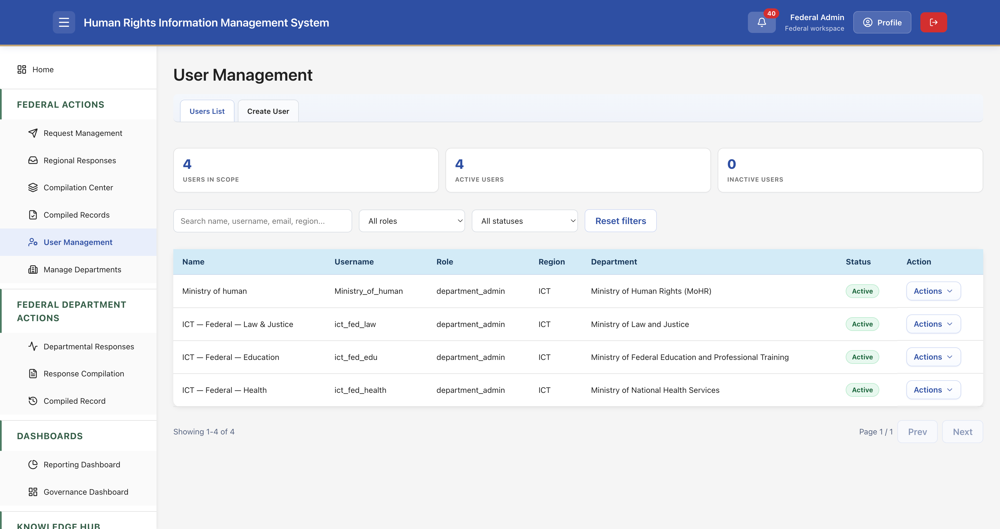
Federal Admin can view and manage users within the system scope.
11.1 Tabs
- Users List – Current users.
- Create User – Form to add a new user.
11.2 Metrics & Filters
Cards for Users in Scope, Active Users, Inactive Users. Search by name, username, email, region; filter by role and status.
11.3 Users Table
Columns: Name, Username, Role (e.g., Departmental data entry operator), Region (ICT), Department, Status (Active), Action dropdown. Typical accounts include Ministry of Human Rights, Law & Justice, Education, Health, etc.
12. Manage Departments

Allows administration of the organizational units that respond to requests.
12.1 Tabs & Metrics
Departments List / Create Department. Cards for Total Departments and Regions Represented.
12.2 Table Columns
- Code (e.g., FED-LAW, FED-HEALTH, FED-EDU)
- Name (full ministry/department name)
- Type (law, health, education, or “–”)
- Region (predominantly ICT for federal line ministries)
- Action dropdown
Examples include Election Commission of Pakistan, Ministry of Interior, Ministry of Law and Justice, Ministry of National Health Services, etc.
13. Departmental Responses
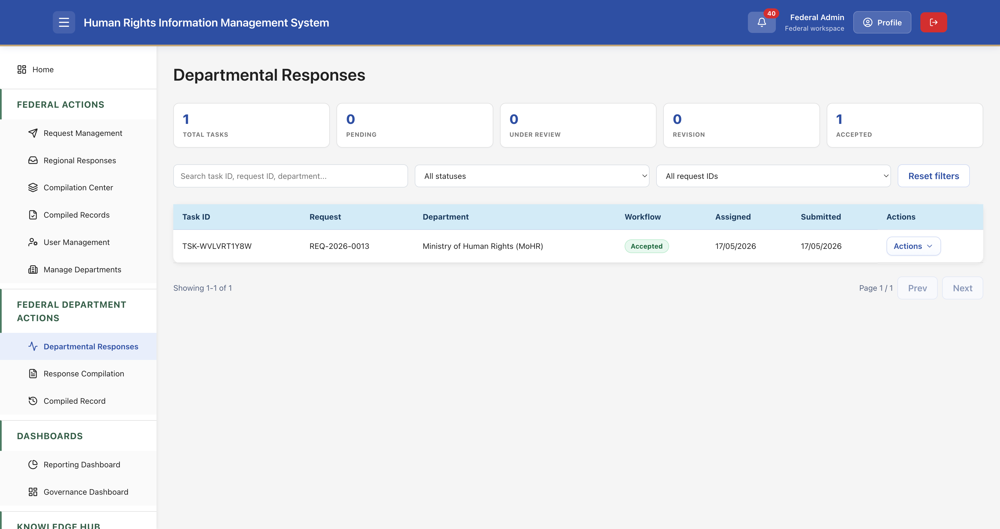
Tracks tasks assigned to federal departments (ICT line ministries) that form part of national responses.
Metrics
Total Tasks, Pending, Under Review, Revision, Accepted.
Table
Columns: Task ID, Request, Department, Workflow status, Assigned date, Submitted date, Actions. Federal Admin can review and accept departmental submissions similarly to regional ones.
14. Reporting Dashboard

Analytical view focused on treaty reporting coverage and indicator response rates.
14.1 Report Filters
Convention, Article, List of Issues / Concluding Observations, Categories, Indicator, Year. Buttons: Reset filters / Apply filters / Save to PDF.
14.2 Summary Cards & Charts
- Articles count, List of Issues, Concluding Observations, Categories, Response Rate.
- Records Status – Bar chart (Request data / Response data / Compiled data).
- List of Issues / Concluding Observations – Donut chart.
- Records by Region – Bar chart (Punjab, Sindh, KP, Balochistan).
14.3 Rankings
Categories – Top 10 and Indicators – Top 10 with percentage bars.
15. Governance Dashboard

Focuses on long-term indicator trends and multi-dimensional analysis.
Filters
Convention, List of Issues / Concluding Observations, Categories, Indicators. At least one indicator must be selected to enable custom trend charts.
Indicator Trends Visualizations
- Line chart – e.g., Total number of deaths recorded in custody database (by year).
- Bar chart – Number of prosecutions initiated following custodial deaths.
- Pie chart – Number of survivors receiving legal aid (by year).
- Multi-series line chart – Same metric broken down by dimensions (Age, Gender, Religion, Disability, Consolidated Data).
16. Knowledge Hub
The Knowledge Hub provides reference material on the core human rights conventions, their articles, lists of issues, concluding observations, document repositories, and quantitative trackers.
16.1 Seven Core Conventions

Cards for each of the seven core treaties ratified by Pakistan:
- ICERD – International Convention on the Elimination of All Forms of Racial Discrimination (Adopted 1965, Ratified 1966)
- ICCPR – International Covenant on Civil and Political Rights (1966 / 2010)
- ICESCR – International Covenant on Economic, Social and Cultural Rights (1966 / 2008)
- CEDAW – Convention on the Elimination of All Forms of Discrimination against Women (1979 / 1996)
- CAT – Convention against Torture… (1984 / 2010)
- CRC – Convention on the Rights of the Child (1989 / 1990)
- CRPD – Convention on the Rights of Persons with Disabilities (2006 / 2011)
Clicking a convention opens its detailed pages.
16.2 CAT – Convention Overview
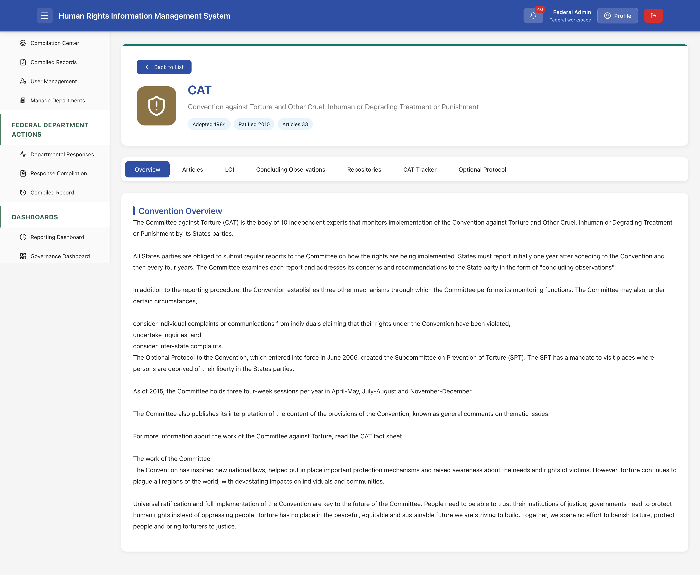
Provides a narrative overview of the Committee against Torture, reporting obligations, individual communications, inquiries, inter-state complaints, the Optional Protocol and SPT, session schedule, and general comments.
16.3 CAT – Articles
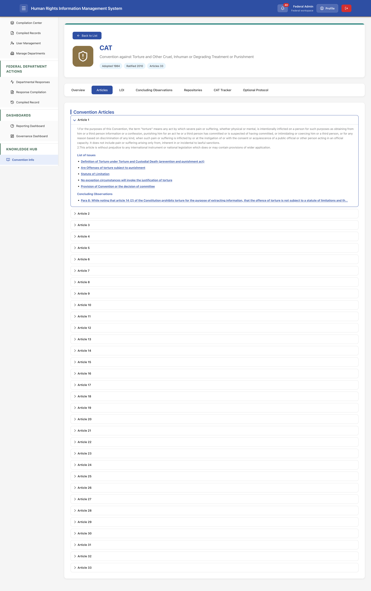
Lists all 33 articles of the Convention. Expanding an article shows its full text, related List of Issues, and linked Concluding Observations paragraphs.
16.4 CAT – List of Issues (LOI)

Searchable table of LOIs with columns: Related articles, Category, List of Issues title, Status (Active), and View action. Categories include Criminalization of Torture, Fundamental Legal Safeguards, Gender-Based Violence, Non-Refoulement & Asylum, Training & Capacity Building, Prison Management, Healthcare, Redress, etc.
16.5 CAT – Concluding Observations

Table of concluding observation paragraphs linked to articles and thematic categories (Absolute Prohibition of Torture, Counter-Terrorism, Enforced Disappearances, Deaths in Custody, Gender-Based Violence, Training & Capacity Building, etc.). Each row has a View link for full text.
16.6 CAT – Repositories

Organized by reporting cycle:
- First cycle: Pakistan State Report 2016, Concluding observations (June 2017), Follow-up reply (2019).
- Second cycle: Pakistan second periodic report (Dec 2022), List of issues (2025), Replies of Pakistan (2025), Concluding Observation (2026).
Documents are available as PDF or Word downloads.
16.7 CAT Tracker (Quantitative)
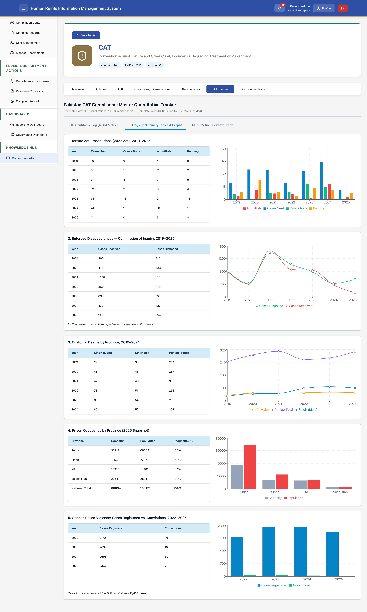
Provides flagship summary tables and graphs, including:
- Torture Act Prosecutions (2022 Act), 2019–2025 – Cases Sent, Convictions, Acquittals, Pending with bar chart.
- Enforced Disappearances – Commission of Inquiry, 2019–2025 – Cases Received vs Disposed with line chart.
- Custodial Deaths by Province, 2019–2024 – Provincial breakdown with multi-line chart.
- Prison Occupancy by Province (2025 Snapshot) – Capacity, Population, Occupancy % with bar chart.
- Gender-Based Violence: Cases Registered vs Convictions, 2022–2025.
16.8 CAT – Optional Protocol
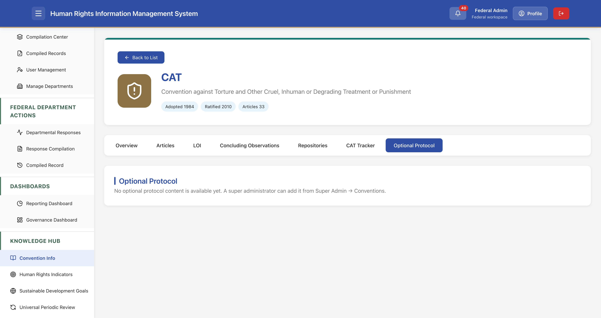
Currently shows a placeholder message: “No optional protocol content is available yet. A super administrator can add it from Super Admin → Conventions.”
17. Typical End-to-End Workflow
- Federal Admin creates a New Request, selects Convention, LOI or Concluding Observation, indicators, regions, and due date, then Submits.
- Regions (and optionally ICT departments) receive tasks and submit consolidated quantitative/qualitative responses.
- Federal Admin reviews responses in Regional Responses / Departmental Responses, accepts them or requests revision.
- Once sufficient responses are Accepted, Federal Admin goes to Compilation Center, selects the request, checks accepted provinces, writes a federal summary, and Submits the national compiled record.
- The compiled record appears under Compiled Records and can be downloaded in PDF, Word, or Excel.
- Dashboards and the Knowledge Hub support ongoing monitoring, reporting, and reference.
18. Tips & Best Practices
- Always accept regional responses before attempting national compilation; the system will warn otherwise.
- Use “Save as Draft” liberally when building complex requests or compilations.
- Leverage the Knowledge Hub LOI and Concluding Observations tables when mapping new requests to ensure correct article and indicator linkage.
- Export Excel from list screens for offline analysis or archival.
- Check the Governance Dashboard trends regularly to spot emerging patterns in key indicators such as custodial deaths or GBV cases.
- Keep user and department lists up to date so that tasks are routed to the correct organizational units.